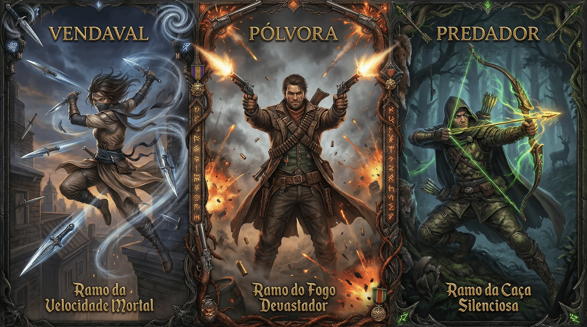

Artilheiro

"Enquanto outros guerreiros precisam sentir o hálito do inimigo para derrotá-lo, você aprendeu que a verdadeira maestria está na distância. Seu alvo cai antes de perceber que estava em perigo."
Artilheiros não são covardes que fogem do combate. São predadores pacientes que escolhem o momento perfeito para atacar. Cada tiro é calculado, cada posição é estratégica, cada munição é preciosa.
⚔️ Treinamento
Você começa treinado em: Armas à Distância, Atacar, Percepção
Escolha (1 + Mod.Int) perícias: Furtividade, Iniciativa, Ofício (Engenharia), Investigação, Movimento
📊 Status Iniciais
❤️ Saúde
10 + (4 × Nível) + (Mod.CON × Nível)⚡ Stamina
8 + (7 × Nível) + ([Mod.FOR OU Mod.DES] × Nível)✨ Éter
6 + (4 × Nível) + ([Mod.INT OU Mod.SAB] × Nível)🛡️ Evasão Ativa
10 + Mod.Des + Prof.Defender🛡️ Evasão Passiva
10 + Mod.Destreza📈 Progressão
| Nível | Conteúdo |
|---|---|
| 1 | 4 Técnicas |
| 2 | 5 Técnicas, Técnica de Ramo (Tier 1) |
| 3 | 6 Técnicas, 1 Marca |
| 4 | 7 Técnicas, Técnica de Ramo (Tier 1, 2), 2 Marcas |
| 5 | 8 Técnicas, Técnica de Ramo (Tier 1, 2 e 3), 3 Marcas |
🎯 Concentração
🎯 Sistema de Concentração
Seus disparos ficam precisos à medida que você se concentra nos pontos fracos dos seus inimigos. Sempre adicione sua Concentração à sua rolagem de ataque!
Concentração Máxima: 3 + Mod. Sabedoria • Começa todo combate com 0.
✅ Ganhando Concentração
- Atacar: Acertar → +1 | Crítico → +2
- Mirar: Gastar 1 ação mirando → +2
- Ficar Parado: Não se mover no turno → +1
❌ Perdendo Concentração
- Ser Atacado: Receber dano → -1
- Se Mover: Usar 1 ação para mover → -1
- Condição: Falhar teste de resistência → -2
- Morte: Aliado cair Morrendo → -3
⚡ Técnicas
Você possui 3 Técnicas + Nível. Pode reatribuí-las em descanso longo.
Respiração Controlada
Não perde Concentração ao receber dano à distância (apenas corpo a corpo).
Frieza
Enquanto tiver 3+ Concentração, tem Vantagem em testes de resistência.
Balas de Ferro
Ataques críticos reduzem 3 de Armadura (Ar/Ae) do alvo no acerto. Só pode remover Armadura do tipo de dano que sua arma causa.
Artesão de Munição
Durante descanso curto ou longo, pode criar 1 munição (Flecha, Munição de Armas de Fogo ou Adagas de lançamento) sem testes.
Olho do Atirador
Pode atirar em criaturas que não enxerga com -2 (ao invés de Desvantagem).
Sentidos Aguçados
Role Percepção com +1 treinamento. Não pode ser Desprevenido por criaturas que você vê.
Batida Tática
Pode se mover sem perder Concentração e sem provocar ataques de oportunidade.
Tiro Camuflado
Deve estar escondido. Próximo ataque é crítico ao acertar.
Tiro Imobilizador
Seu próximo ataque a distância causa Lento 1 se o alvo falhar em Fortitude.
Tiro Duplo
Próximo ataque não tem penalidade de multi-ataque.
Tiro Preciso
Próximo ataque à distância tem +2 Atacar e +1d6 de dano.
Foco Absoluto
Próximo ataque tem Vantagem e Margem de Ameaça +1.
Tiro na Cabeça
Próximo ataque causa +1d6 de dano por ponto de Concentração gasto.
Ponto Vital
Ao acertar crítico, adiciona +2d6 de dano.
Tiro de Reflexo
Quando inimigo se mover no seu alcance, pode atacá-lo como reação.
🌿 Ramos
Os ramos são caminhos irreversíveis. Você escolherá: 3 Marcas e 6 Técnicas de Ramo (3 no Tier 1, ao chegar ao nível 2; 2 no Tier 2, no nível 4; e 1 Ultimate no Tier 3, no nível 5).
🌀 Ramo do Vendaval
Você não arremessa facas - você desencadeia um vendaval de aço que corta, perfura e silencia antes que o grito escape.
🔥 Ramo da Pólvora
O poder absoluto de transformar vida em silêncio com um aperto de dedo. Alguns temem o barulho - você aprendeu a amá-lo.
🏹 Ramo do Predador
A caça não é sobre força - é sobre espera. A presa nunca sabe que está sendo caçada até que a flecha já tenha deixado o arco.
🔥 Marcas de Ramo
🌀 Marcas do Vendaval
Inquieto
Para cada combate que você é o primeiro a jogar, ganha +1 permanente em Iniciativa (máx +5).
Ao rolar maior Iniciativa do combate, ganha +2 Concentração no início do primeiro turno.
Colecionador de Lâminas
Pode gastar 5 minutos após um combate recuperando 1 Conjunto de Arremesso.
Pode batizar uma Arma de Arremesso em descanso longo. Ganha +1 ao atacar com ela.
🔥 Marcas da Pólvora
Vício de Poder
Para cada 5 criaturas mortas com armas à distância, ganha +1 permanente em Atacar (máx +5).
Se acertar crítico com arma à distância, recupera 1 de Stamina.
Ao passar 24 horas sem disparar, fica irritado: -1 em testes sociais até disparar.
Conhecedor de Armas de Fogo
Você tem +2 em testes de Vontade.
Você conhece contatos que vendem armas de fogo e munições especiais em cada lugar do mundo.
🏹 Marcas do Predador
Paciência Inabalável
Para cada 5 combates com 6+ Concentração, ganha +1 permanente em Percepção (máx +5).
Ao ficar imóvel 1 turno inteiro, ganha Vantagem no próximo ataque à distância.
Você tem +2 em testes de Sobrevivência.
Marca no Alvo
Ao errar um ataque, pode marcar o alvo mentalmente. Ganha +1 Atacar cumulativo (máx +3) até acertá-lo.
Se uma criatura marcada fugir, você sabe a direção geral (até 1km).
Você tem +2 em Investigação para encontrar informações sobre alvos marcados.
⚡ Técnicas de Ramo
Tier 1
Nível 2+🌀 Vendaval
Mãos Velozes
Passiva+1 Treinamento em Atacar. Com Armas de Arremesso:
- Sacar como ação livre
- Multi-ataque -2 (ao invés de -5)
- 2+ ataques no mesmo turno/alvo: +1d6 Perfurante
Fabrica 1 Conjunto de Arremesso em descanso curto e 2 em descanso longo.
Passo do Vento
Passiva- Mover-se não perde mais Concentração
- Ao acertar: move 1,5m como ação livre
- Adiciona Concentração à Evasão
Vendaval de Aço
2 Ações, 5 StaminaFaça 3 Ataques com Armas de Arremesso sem penalidade de multi-ataque.
Se 2+ acertarem mesmo alvo: Sangramento 1.
🔥 Pólvora
Mão de Ferro
Passiva+1 Treinamento em Atacar. Com Armas de Fogo:
- +2 de dano Perfurante
- Ignora 2 de Armadura (Ar)
Fabrica 1 Munição de Fogo em descanso curto e 2 em descanso longo.
Presença da Pólvora
Passiva+1 Treinamento em Intimidação.
Ao acertar com arma de fogo, criaturas em 3m do alvo (exceto o alvo): Vontade ou Amedrontadas 1 rodada. Ao suceder, a criatura fica imune a esse efeito. Com 5+ Concentração, o efeito também afeta o alvo.
Com 5+ Concentração: afeta o alvo também.
Rajada de Tiros
1 Ação, 3 Stamina2 Ataques com uma Arma de Fogo sem penalidade em até 2 alvos com 3m entre si.
Se 2 acertarem mesmo alvo: Fortitude ou Atordoado até o fim do próximo turno dele.
🏹 Predador
Olho do Arqueiro
Passiva+1 Treinamento em Atacar. Com Arcos/Bestas:
- Alcance +6m
- Ao mirar: próximo ataque +2 Atacar
Fabrica 1 munição de Flecha ou Virote em descanso curto e 2 em descanso longo.
Flechas do Predador
PassivaEscolha o tipo de flecha ao atacar:
- Perfurante: Ignora 3 Ar adicional
- Farpada: Sangramento 1
- Explosão: Empurra 1,5m
- Incendiária: +1d4 Fogo
Tiro Carregado
1-3 Ações, 2 Stamina- 1 Ação: +1d6 Perfurante
- 2 Ações: +2d6 Perfurante
- 3 Ações: +3d6 Perfurante, Crítico +1
Ganha +1 Concentração por ação gasta.
Tier 2
Nível 4+🌀 Vendaval
Projétil Envenenado
PassivaDurante descanso curto, aplica veneno em até 5 munições (flechas, virotes, munições de fogo ou armas de arremesso).
Ao acertar: Fortitude ou Envenenamento 2 rodadas. Com 5+ Conc: Desvantagem no teste.
Dança da Morte
1 Ação, 4 Stamina, 3 Conc.Até próximo turno: quando criatura se mover no alcance, faça 1 Ataque à Distância como ação livre (gasta reação).
Se acertar 3+: recupera 2 Concentração.
🔥 Pólvora
Munição Especial
1 Ação, 2 StaminaFabrica munições especiais (uso único):
- Explosiva: Criaturas em 1,5m sofrem o dano original da flecha
- Perfurante: Ignora toda armadura
- Atordoante: Fortitude ou Atordoado por 1 rodada (não causa dano)
- Incendiária: Alvo fica Em Chamas
Fabrica 1 Munição Especial em descanso curto ou 2 em descanso longo. 3 munições especiais contam como 1 bugiganga.
Execução
1 Ação, 4 Stamina, 5 Conc.Próximo ataque: +4 Atacar.
Se alvo <50% HP: +2d6 Perfurante.
Se alvo <25% HP: crítico automático.
Se matar: +3 Concentração.
🏹 Predador
Olhar Revelador
PassivaAo acertar a mesma criatura 2x, revela: Saúde aproximada, Resistências/Vulnerabilidades, Evasão.
Ataques contra alvos revelados: +1d6 Perfurante.
Dois Cordeiros
2 Ações, 4 Stamina, 4 Conc.Dispara em linha reta de até 12m.
Atinge todas as criaturas na linha. Faça Atacar contra cada alvo.
A cada alvo atingido, o próximo toma -2 dano.
Tier 3 — Ultimates
Nível 5 • 1x/Dia🌀 Tempestade de Aço
Desencadeia uma rajada implacável em raio 6m até 12m de distância.
- 1 ataque contra cada criatura na área
- Atingidos: Fortitude ou Sangramento 2 e Lento 1 por 2 rodadas
- Para cada 2 criaturas atingidas: +1 ataque adicional
💀 O Custo
- Perde toda Concentração
- Gasta 1 munição
- Perde 1d6 de Éter
🔥 Canhão
Disparo devastador com +6 Atacar.
- Dano: base + 5d6 + Concentração atual em d6s de Perfurante
- Alvo e criaturas em 3m: Fortitude ou Atordoados e Surdos por 1 rodada
- Se matar: criaturas em 9m que presenciaram devem passar em Vontade ou ficam Amedrontadas até passar no teste no início de cada rodada
- Barulho audível até 1km
💀 O Custo
- Perde toda Concentração
- Arma inutilizável até descanso longo
- Perde 1d6 de Éter
🏹 Tiro Predador
Disparo que transcende a precisão mortal:
- Alcance ilimitado (desde que saiba onde está o alvo)
- Ignora cobertura, Ar, Ae e Resistência
- Crítico automático se acertar
Alvo deve passar em Fortitude ou sofre (sua escolha):
- Execução: Se <30% HP, morre instantaneamente
- Incapacitar: Paralisado 2 rodadas
- Marcar: Permanentemente marcado, você sempre sabe sua localização e tem +4 Atacar contra ele até morrer
💀 O Custo
- Perde toda Concentração
- Fica com Exaustão 1
- Perde 1d6 de Éter